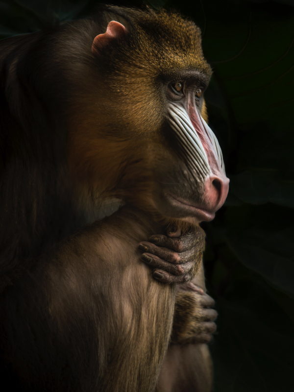

Animais Fantásticos
-

-

-

-

- 
-

Raposa
Raposas são pequenos a médios mamíferos onívoros pertencentes a vários gêneros da família Canidae. As raposas têm o crânio achatado, orelhas triangulares verticais, focinho pontiagudo e ligeiramente arrebitado e uma cauda longa e peluda.
Também apresentam como particularidade suas pupilas ovais, semelhantes às pupilas verticais dos felídeos.
De cerca de 40 espécies reconhecidas como raposas, somente 12 pertecem ao gênero Vulpes das "raposas verdadeiras", do qual a raposa vermelha é a mais comum.
Também apresentam como particularidade suas pupilas ovais, semelhantes às pupilas verticais dos felídeos.
Esquilo
Esquilos são pequenos mamíferos roedores pertencentes à família Sciuridae. Os esquilos possuem corpos esguios, caudas longas e peludas, olhos grandes e vibrissas sensíveis, que os ajudam a detectar mudanças no ambiente.
Também apresentam como particularidade seus dentes incisivos de crescimento contínuo, adaptados para roer sementes e cascas de árvores.
Das mais de 200 espécies reconhecidas de esquilos, eles podem ser classificados em três grupos principais: esquilos arborícolas, terrestres e voadores, sendo os esquilos-vermelhos e os esquilos-cinzentos os mais conhecidos.
Também apresentam como particularidade sua agilidade excepcional, permitindo que saltem de galho em galho com grande precisão.
Ursos
Ursos são grandes mamíferos onívoros pertencentes à família Ursidae. Os ursos possuem corpos robustos, patas fortes com garras afiadas, focinho alongado e uma densa pelagem que os protege do frio.
Também apresentam como particularidade sua excelente capacidade olfativa, sendo considerada uma das mais aguçadas do reino animal.
Das oito espécies de ursos existentes, os mais conhecidos são o urso-pardo, o urso-polar e o urso-negro, cada um adaptado a diferentes habitats ao redor do mundo.
Também apresentam como particularidade sua habilidade de ficar em pé sobre as patas traseiras, o que os ajuda a observar o ambiente e se comunicar.
Lobos
Lobos são grandes mamíferos carnívoros pertencentes à família Canidae. Os lobos possuem corpos esguios e musculosos, focinhos alongados, orelhas eretas e caudas peludas que ajudam na comunicação.
Também apresentam como particularidade sua estrutura social complexa, vivendo em matilhas organizadas com hierarquia bem definida.
Das várias subespécies de lobo, o lobo-cinzento é o mais comum e pode ser encontrado em diversas regiões do hemisfério norte.
Também apresentam como particularidade sua vocalização diversificada, sendo o uivo uma de suas formas mais icônicas de comunicação à distância.
Macaco
Macacos são mamíferos primatas pertencentes à ordem Primates. Possuem corpos ágeis, caudas longas em muitas espécies, mãos e pés preênseis, adaptados para segurar e manipular objetos com destreza.
Também apresentam como particularidade sua grande inteligência e habilidades sociais, vivendo em grupos organizados com complexos sistemas de comunicação.
Existem mais de 260 espécies de macacos, divididas entre os do Novo Mundo, como o bugio e o sagui, e os do Velho Mundo, como o babuíno e o macaco-japonês.
Também apresentam como particularidade sua capacidade de usar ferramentas, demonstrando comportamento altamente adaptativo ao ambiente.
Leão
Leões são grandes mamíferos carnívoros pertencentes à família Felidae e ao gênero Panthera. Os leões têm um crânio robusto, orelhas arredondadas, focinho curto e poderoso, e uma cauda longa com uma juba característica nos machos.
Também apresentam como particularidade suas pupilas redondas, adaptadas para uma visão noturna eficiente, o que é comum entre os felinos.
De todas as espécies de grandes felinos, os leões são os únicos que vivem em grupos sociais chamados de coalizões, compostos principalmente por fêmeas relacionadas e alguns machos.
Também apresentam como particularidade suas garras retráteis, que são afiadas e usadas para caçar e dominar presas, uma característica compartilhada com outros membros da família Felidae.
FAQ
- Qual a idade dos animais?
- Raposas são pequenos a médios mamíferos onívoros pertencentes a vários gêneros da família Canidae. As raposas têm o crânio achatado, orelhas triangulares verticais, focinho pontiagudo e ligeiramente arrebitado e uma cauda longa e peluda.
- Eles são Fantásticos?
- Também apresentam como particularidade suas pupilas ovais, semelhantes às pupilas verticais dos felídeos.
- Qual a diferença?
- Raposas são pequenos a médios mamíferos onívoros pertencentes a vários gêneros da família Canidae. As raposas têm o crânio achatado, orelhas triangulares verticais, focinho pontiagudo e ligeiramente arrebitado e uma cauda longa e peluda.
- Como proteger?
- Também apresentam como particularidade suas pupilas ovais, semelhantes às pupilas verticais dos felídeos.
Números
Contato

- wcavalcante.dev@gmail.com
- +55 (99) 9999-9999
- Rua ali perto, nº 45
- Imperatriz - MA
- Doe 0 bitcoin para nos ajudar
- Seg à Sex das 8 às 18